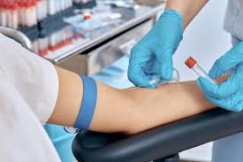
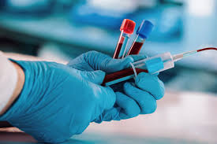
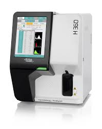
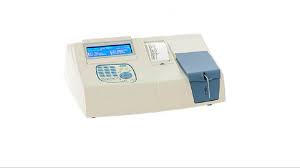
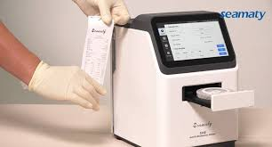

Best Diagnostic in Ghatkopar West
4.8/5
Google rating based on 10 reviews
24 Hours
Open for bookings, testing, and support
Ghatkopar West
Near Rane Building in Mumbai, Maharashtra
LABPRIX DIAGNOSTICS CENTRE for blood, diabetes, thyroid, urine, vitamin, and hormonal tests.
Visit Labprix Diagnostics Centre in Ghatkopar West for exceptional clinical service and true care. Your staff, doctors, and technicians are presented here as professional, polite, and focused on the health and well-being of every patient in an environment that supports healing and wellness.

Home sample collection Convenient for fasting tests, families, senior citizens, and busy patients.
Blood, diabetes, and thyroid testing Focused routine diagnostics for common daily health concerns.
Health packages
Checkup options tailored for routine care and preventive testing.
These cards now reflect the services you mentioned for Labprix Diagnostics Centre and can be expanded later with your full price list.

Health Profile
Routine preventive screening for patients looking for a broad health review.
Starting range: Rs. 1,500 to Rs. 10,000- Routine blood and wellness markers
- Ideal for general health monitoring
- Useful for annual preventive checkups

Diabetes and Thyroid Care
Designed for regular monitoring, fasting checks, and follow-up testing.
- Blood sugar and HbA1c focused testing
- Thyroid profile for ongoing care
- Quick booking for repeat patients

Vitamin and Hormonal Screening
Supportive preventive testing for fatigue, nutrition, and hormonal balance.
- Vitamin-related wellness markers
- Hormonal tests for targeted follow-up
- Useful for long-term health management
Our services
Labprix focuses on the routine tests patients ask for most often.
Instead of generic categories, this section now reflects the actual diagnostic tests and patient needs you described for your center in Ghatkopar West.
Blood Tests
Routine pathology and preventive blood testing for everyday health monitoring.
Diabetes Profiles
Blood sugar and long-term diabetes monitoring for repeat patients and checkups.
Urine and Thyroid Tests
Common routine diagnostics that patients often book for symptoms and follow-up.
Preventive Health Monitoring
Supportive diagnostic monitoring for full checkups, wellness reviews, and follow-up care.
Why choose us
Professional, polite, and well-trained care in Ghatkopar West.
Your business description says Labprix is built by people who truly care in an environment that promotes healing and wellness. This section reinforces that message with local trust signals and service-focused copy.
Plan a Home Visit
Popular tests
Highlight the exact tests people search for in Ghatkopar West.
Complete Blood Count
Routine screening for weakness, infection, fever, and general health checks.
Thyroid Profile
Useful for fatigue, weight changes, and ongoing thyroid monitoring.
HbA1c and Sugar Panel
Designed for diabetes screening, follow-up, and lifestyle monitoring.
Urine Routine Test
Commonly booked for routine screening, infection review, and follow-up care.
Vitamin Profile
Useful for low energy, deficiency concerns, and preventive wellness tracking.
Hormonal Test Panel
Focused support for patients who need targeted hormonal follow-up testing.
Inside the lab
Real equipment and sample visuals make the website feel more authentic.
Testimonials
Real review highlights make the page feel local and trustworthy.
"I had a very good experience with Labprix Diagnostic Centre. The staff is very professional, polite, and well-trained. The sample collection process was quick."
Anand Gupta Google review highlight"Great place for your health checkup."
Prameshwar Google review highlightLabprix Diagnostics Centre currently shows a 4.8 rating from 10 reviews, which is a strong trust signal to feature near the booking area and contact details.
4.8 out of 5 Based on 10 reviews
FAQ
Use the FAQ to answer the most important local patient questions.
Where is Labprix Diagnostics Centre located?
Shop No. 1, Gajanan Krupa Soc, near Rane Building, opp. Gyanprakash Vidyalaya, Kaju Pada, Bhatwadi, Ghatkopar West, Mumbai, Maharashtra 400084. View on Google Maps
What tests are available at Labprix?
Labprix Diagnostics Centre highlights blood, diabetes, thyroid, urine, vitamin, hormonal tests, and broader health profiles.
Do you serve nearby areas like Hiranandani Gardens?
Yes. The business listing mentions Hiranandani Gardens and nearby areas as part of the service reach.
Are you open 24 hours?
Yes. The information you shared says the center is open 24 hours.
Contact us
Direct local contact details for Labprix Diagnostics Centre.
This section now uses the Labprix address and phone details you shared, so the website feels tied to a real diagnostic center in Ghatkopar West.